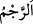
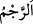

eşrafından olsun, isterse aciz ve zayıf kimselerden olsun fark etmez. Dolayısıyla sadece
zenginler tâbi olsun diye, fakirleri kovmak bana nasıl yakışır?!
116. Dediler ki: “Ey Nuh, (bu dediğinden) vazgeçmezsen mutlaka taşlananlardan
olacaksın.
“Dediler ki: “Ey Nuh,” söylediklerinden; yâni dâvetten ve uyarmaktan
“vazgeçmezsen” geri durmazsan, “mutlaka taşlananlardan olacaksın.”
Rağıb, el-Müfredât’ta der ki: “ taşlar demektir. “ de taş atmak, demektir.
taşlar demektir. “ de taş atmak, demektir.
Allah Teâlâ: “mutlaka taşlananlardan olacaksın” buyurdu. Bunun anlamı, en kötü
şekilde taşlanarak öldürülenlerden olacaksın, demektir.
Nuh (a.s.)’ın kavmi, bu sözü, onun risâlet görevinin sonlarına doğru söylediler.
117. Nuh dedi ki: Rabbim, kavmim beni yalancılıkla suçladı.
Bu uzun süre, tebliğ hayatı boyunca, yani dokuz yüz elli sene onları dâvet ettikten
sonra onlar tekzibte/yalancılıkla suçlamakta ısrar ettiler. Benim davetim, onların sadece
kaçışlarını artırdı.
118. Artık benimle onların arasında sen hükmünü ver. Beni ve beraberimdeki
mü’minleri kurtar.
“Artık benimle onların arasında sen hükmünü ver.” Bizden her birinin hak ettiği ile
aramızda hükmet.
et-Te’vîlâtü’n-Necmiyye’de der ki: “Hak edenlere lütuf kapılarından bir kapı, yine
hak edenlere adâlet kapılarından bir kapı aç.”
Buradaki fiil “dendir. “ hâkim/hükmeden demektir. Kapalı bir işi açtığı
için ona bu isim verilmiştir. Hasımların arasını ayırdığı için ona “ da denilmiştir.
Şeyhzâde der ki: “Nuh (a.s.), bununla onlara azâbın inme hükmünü kasdetmiştir.
Çünkü ardından şöyle demiştir:
“Beni ve beraberimdeki mü’minleri” azabdan ve kâfirlerin eziyetlerinden “kurtar.”